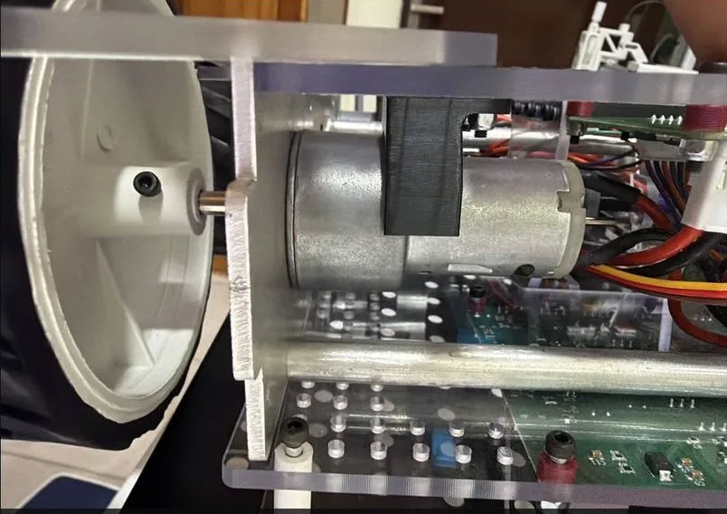

The starting kit
- Original chassis
- Arm and gripper
- Manual control
- No line sensor

- Objective
- Drive and score by controller: tank drive and a servo arm.
- Problem
- No line detection, so no autonomy. No encoders, so no measured distance. The kit wheels lacked grip, and a motor can twist in its mount under load.
- Alternatives
- 300 RPM motors (about 300 N-cm stall torque in seller listings) or 600 RPM (about 122 N-cm). A 180° rotating arm or a fixed-plane arm.
- Decision
- Kept 300 RPM: at 2.5 kg, traction limits pushing, not torque. Fitted higher-grip wheels and bolted 3D-printed motor clamps. Kept the arm in a fixed plane, sweeping 90°.
- Result
- Simple and easy to assemble. Driver-controlled pick-up works. About 1.57 m/s at full power, calculated from 300 RPM and 10 cm wheels.